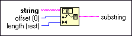

String Subset Function
Owning Palette: String Functions
Requires: Base Development System
Returns the substring of the input string beginning at offset and containing length number of characters.
The connector pane displays the default data types for this polymorphic function.

 Add to the block diagram Add to the block diagram |
 Find on the palette Find on the palette |